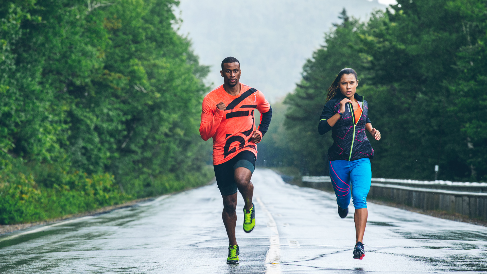
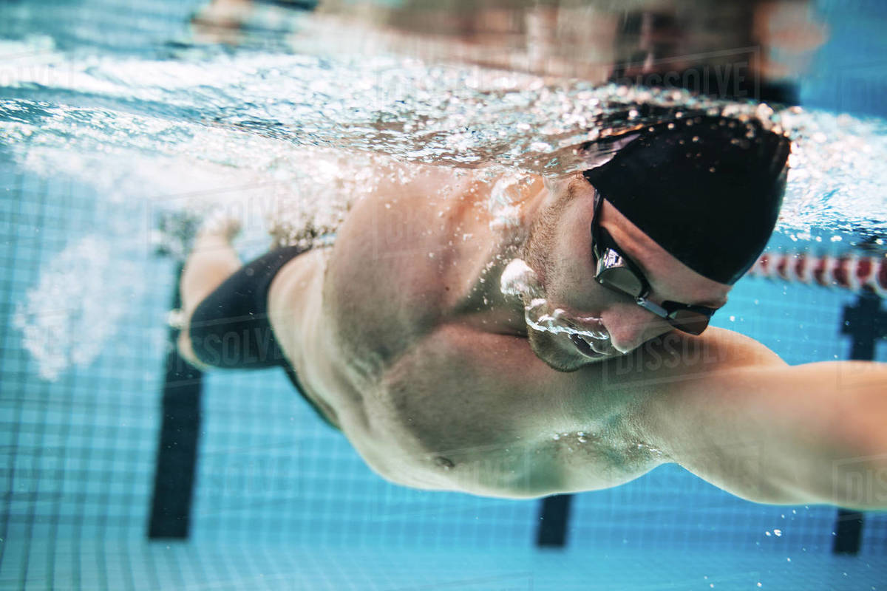
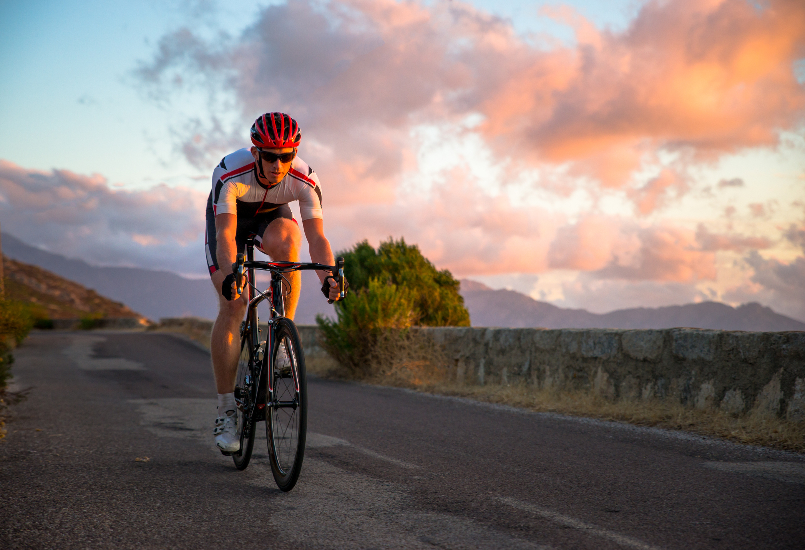

La course à pied est un excellent moyen de rester en forme. Elle améliore l'endurance cardiovasculaire, renforce les muscles des jambes et peut aider à perdre du poids. Pour commencer, il suffit d'avoir une paire de chaussures confortables et de se lancer !
La natation est un sport complet qui sollicite tous les muscles du corps. Elle est également très douce pour les articulations, ce qui en fait une pratique idéale pour les personnes souffrant de douleurs articulaires. Pour commencer, il suffit de trouver une piscine près de chez soi et de se jeter à l'eau !
Le cyclisme est un excellent moyen de se déplacer tout en faisant de l'exercice. Il renforce les muscles des jambes et des fesses, améliore l'endurance cardiovasculaire et peut aider à perdre du poids. Pour commencer, il suffit d'avoir un vélo confortable et de se lancer sur les routes ou les pistes cyclables !
